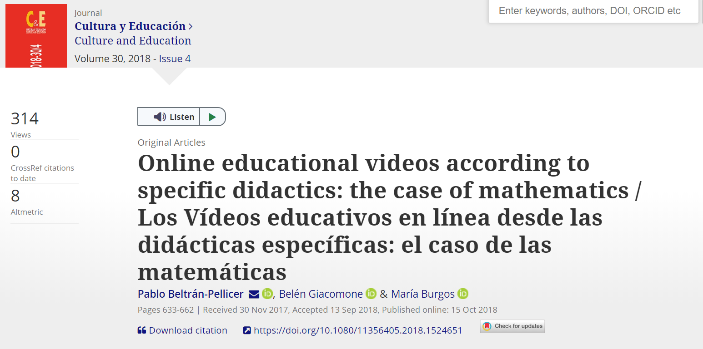
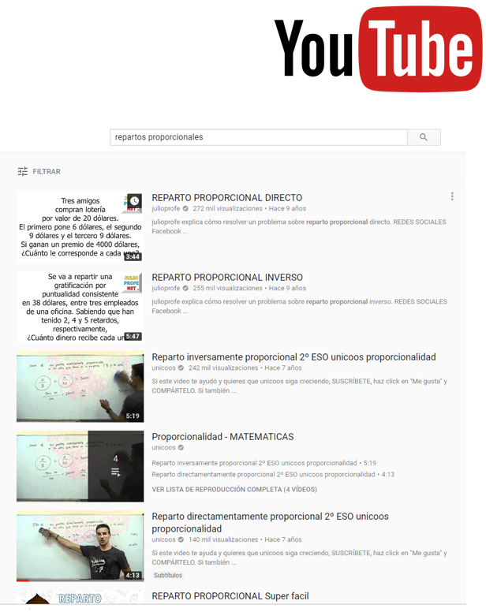
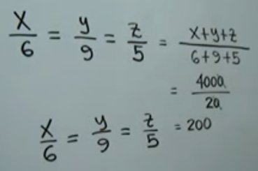
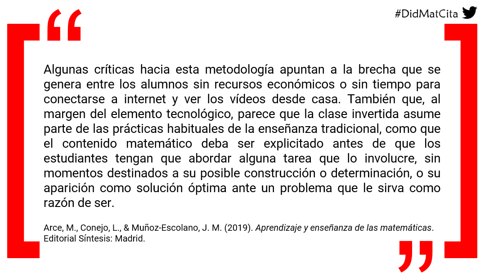

Vídeos educativos de matemáticas en línea
Una reflexión desde los contenidos hasta lo afectivo
Pablo Beltrán-Pellicer
@pbeltranp


5 de octubre de 2019
Una empresa docente - Bogotá, Colombia.
Acceso a la presentación

¿Por qué interesarnos en esto?
- El fenómeno de los vídeos educativos alojados en plataformas en línea no es nuevo.
- YouTube™ es aceptado por los estudiantes como medio para el aprendizaje de las matemáticas (Ramírez, 2010).
- Estos vídeos son un recurso muy utilizado en ciertas propuestas pedagógicas, como en el flipped learning (Davies, Dean, & Ball, 2013).
Es necesario que las didácticas específicas indaguen sobre el grado de adecuación de estas propuestas de enseñanza-aprendizaje, asegurando de esta forma que la tecnología esté alineada con los objetivos de aprendizaje (Turney, Robinson, Lee, & Soutar, 2009)
Un estudio sobre vídeos de YouTube
Beltrán-Pellicer, P., Giacomone, B., & Burgos, M. (2018). Online educational videos according to specific didactics: the case of mathematics / Los vídeos educativos en línea desde las didácticas específicas: el caso de las matemáticas. Cultura y Educación, 30(4), 633-662. doi: 10.1080/11356405.2018.1524651.

Objetivo del trabajo
En este estudio se describe y se interpreta la faceta epistémica de videos educativos en línea previamente seleccionados, teniendo como objetivo general valorar el grado de adecuación epistémica de los vídeos más vistos por los usuarios en YouTube™.
Marco teórico y metodología
- Metodología cualitativa, de carácter interpretativo-valorativo.
- Herramientas teórico-metodológicas del enfoque ontológico-semiótico del conocimiento y la instrucción matemáticos (EOS) (Godino, Batanero, & Font, 2007).

Idoneidad didáctica
Grado en que un proceso de instrucción reúne ciertas características que permiten calificarlo como adecuado para la adaptación entre los significados personales obtenidos por los alumnos (aprendizaje) y los significados institucionales, ya sean pretendidos o implementados (enseñanza), considerando la influencia del entorno (Godino, 2013).
Idoneidad didáctica

Fuente: Godino (2013).
Criterios de idoneidad
- Para cada faceta Godino (2013) propone un sistema de criterios generales para que sean consideradas de calidad.
- Breda, Pino-Fan, & Font (2017) señalan que estos criterios de idoneidad didáctica son potentes herramientas para organizar la reflexión y evaluación de un proceso de instrucción.
- Es conveniente utilizarlos para analizar y valorar los vídeos de la muestra considerada.
- Santos (2018) propone un modelo para valorar vídeos educativos de matemáticas:
- Idoneidad didáctica (EOS).
- Lógica difusa para considerar la evaluación mediante una opinión de las comunidades de interés
- Métodos multicriterio (TOPSIS), para ordenar los datos obtenidos y tomar decisiones a partir de ellos.
Faceta epistémica
- La faceta epistémica se refiere, en términos de Breda et al., (2017) a la enseñanza de una buena matemática.
- La idoneidad epistémica se considera mayor en la medida que los contenidos pretendidos o implementados representan bien a los contenidos de referencia. Dos criterios fundamentales (Godino, 2013):
- La presencia de diversos significados del contenido correspondiente y su interconexión.
- El reconocimiento de la diversidad de objetos primarios y procesos implicados para los diversos significados.
Faceta epistémica
Las situaciones-problemas tienen un rol central en el EOS, de modo que los objetos matemáticos participan y emergen de los sistemas de prácticas matemáticas.
Se trata de dar una respuesta satisfactoria a la cuestión del significado de los objetos matemáticos
- ¿Qué es la media?
- ¿Qué es el número?
Algunas referencias para profundizar
- Godino, J. D., Batanero, C. y Font, V. (2019). The onto-semiotic approach: implications for the prescriptive character of didactics. For the Learning of Mathematics, 39(1), 37- 42. Enlace a la versión en español
- Juan D. Godino en ‘Una empresa docente’
- Vicenç Font en ‘Una empresa docente’
Faceta epistémica
Bajo esta perspectiva ontosemiótica, la actividad matemática se puede describir y analizar a partir de una ontología explícita de objetos (Godino et al., 2007):
- Lenguajes (en sus diversos registros y representaciones, natural, gestual, simbólico, gráfico, etc.).
- Situaciones-problemas (aplicaciones intra y extra-matemáticas, ejercicios, problemas).
- Reglas:
- Conceptos-definición (conceptos introducidos mediante definiciones o descripciones, proporcionalidad, función, etc.).
- Proposiciones (enunciados sobre conceptos-definición).
- Procedimientos (algoritmos, operaciones, técnicas de cálculo).
- Argumentos (enunciados usados para validar o explicar las proposiciones y procedimientos).
Objeto matemático de estudio
Repartos directamente proporcionales.
- Este tipo de situación-problema aparece en el primer ciclo de ESO en España, dentro del bloque dedicado a ‘Números y álgebra’ (LOMCE).
- Las concreciones curriculares autonómicas lo incluyen en 2º ESO (13-14 años).
- La proporcionalidad es un tema recurrente en los canales de YouTube™.
Niveles de algebrización
Modelo de razonamiento algebraico escolar (EOS):
- Niveles de algebrización de las prácticas matemáticas que se realizan al resolver tareas propias de Educación Primaria y Secundaria (Godino, Aké, Gonzato, & Wilhelmi, 2014; Godino, Neto, Wilhelmi, Aké, Etchegaray, & Lasa, 2015).
- Se definen a partir de los tipos de representaciones usadas, los procesos de generalización implicados y el cálculo analítico que se pone en juego en la actividad matemática correspondiente (los tres primeros niveles que son suficientes para nuestro trabajo).
Niveles de algebrización

Se trata de responder a la preguna de qué es el álgebra.
De hecho, es una cuestión de gran interés para la didáctica de la matemática que se trató en la última conferencia de Una Empresa Docente, de Angel Alsina.
Muestra
- Una búsqueda por vídeos en YouTube™ con las palabras clave repartos proporcionales devuelve 1370 resultados.
- Seleccionamos solamente aquellos con más de 1000 visitas.
- Se reduce el conjunto a 60 vídeos. De ellos, la mitad tratan exclusivamente repartos inversamente proporcionales o compuestos, de manera que la muestra final de estudio queda determinada por 31 vídeos.

Resultados obtenidos
Niveles de algebrización
En relación con los niveles de algebrización, encontramos resoluciones:
- Aritméticas
- Proto-algebraicas: razones y proporciones
- Proto-algebraicas: valor perdido
- Algebraicas: símbolos analíticos sin aludir al contexto
¿Es mejor un nivel 4 que un 1?
Que sea de un nivel u otro no implica que sea ni mejor ni peor. Simplemente, que se ponen en juego objetos con mayor o menor grado de abstracción. En 2ºESO el análisis de la bibliografía revela consenso en un enfoque aritmético, con ciertas conexiones al álgebra.
En la muestra de 31 vídeos encontramos soluciones:
- Parte-todo (fracción como operador): 7 vídeos (23%).
- Reducción a la unidad: 6 vídeos (19%).
- Valor perdido: en 11 vídeos (35%).
- Ecuaciones basadas en k: 10 vídeos (32%)
Los porcentajes no suman 100%. Hay vídeos que abordan más de un tipo de solución.
Registros y representaciones

Dos ejemplos
Uso del del registro simbólico-algebraico propio de nivel 3.

Ejemplo de representación diagramática.

Llegados a este punto (niveles y lenguajes)
- Un estudiante puede encontrarse con vídeos que aporten significados poco adecuados a su nivel o que incluso interfieran con el proceso de negociación que plantee su profesor de aula.
- Surge la necesidad de que sea su docente de referencia el que seleccione los vídeos. O la importancia de adquirir un sentido crítico.
Analisis de las reglas
Solo uno de los vídeos de la muestra aporta una definición correcta de la situación:
“Si una persona aporta el doble, le corresponde el doble en el reparto, etc.”
9 de los vídeos (29%) incurren en el error de definir este tipo de situación en términos aditivos, como aquella en la que el que ‘más’ aportó inicialmente, ‘más’ recibe:
“Eso es reparto proporcional, entre que a más cooperes, mayor cantidad te tocará.”
Errores e impreciciones en las reglas
- Por tanto, se asume que es una situación de proporcionalidad, sin exigir una condición de regularidad. Se fomenta lo que algunos autores llaman la ilusión de linealidad.
- Hay muchos vídeos que ni identifican las magnitudes que intervienen ni sus unidades de medida.
- En 4 vídeos (13%) hay errores en el tratamiento de las operaciones aritméticas y/o de las expresiones algebraicas y en 5 de los vídeos (16%) se observan otras imprecisiones o errores.

Argumentos
En cuanto a los argumentos. Muchos de los vídeos carecen de ellos. Y de los que hacen, por ejemplo, una comprobación, el argumento destinado a verificarla suele incluir una condición necesaria, pero no suficiente.
Volvemos al “a mayor… más…”.
Relaciones o conexiones entre los objetos matemáticos
Hay vídeos que no aportan significado, no hay relación alguna entre objetos.
- Únicamente 4 de los vídeos (13%) identifican y articulan los diversos significados de los objetos que intervienen.
- En 15 vídeos (48%) solamente se identifican a veces.
- En 12 vídeos (39%), el profesor no lo hace nunca.
La constante de proporcionalidad
El significado de \(k\) es el que menos se identifica. Ciertos vídeos hacen uso de los literales \(x\), \(y\) o \(z\), para simbolizar las cantidades desconocidas en el reparto, identifican a qué se refieren, pero posteriormente aparece \(k\) y no se establece su significado.
Valoración de la idoneidad

Se puede acceder a los enlaces fácilmente desde el artículo.
Limitaciones
- Complejidad a la hora de cuantificar el grado de idoneidad epistémica de cada vídeo.
- La reducción a un simple número conlleva una pérdida de información.
- En este trabajo se ha calculado el grado de idoneidad de forma similar a lo realizado por otros autores (Learning Mathematics for Teaching Project, 2011).
Los valores obtenidos revelan una baja idoneidad epistémica, que concuerda con resultados de estudios similares para otros campos del conocimiento, como las ciencias experimentales y sociales (Bortoliero & León, 2017; Tan, 2013).
Dominio afectivo
La faceta afectiva
La faceta afectiva de un proceso de enseñanza y aprendizaje de las matemáticas es una de las complejas.
- Interacción con la faceta cognitiva.
- Objeto de investigación desde diferentes marcos teóricos.
- Consenso en distinguir emociones, actitudes y creencias (McLeod, 1992).
- Es habitual considerar también los valores (DeBellis y Goldin, 2006).
El dominio afectivo desde el EOS
Beltrán-Pellicer, P., Godino, J. D. (2019). An onto-semiotic approach to the analysis of the affective domain in mathematics education. Cambridge Journal of Education, 1-20. DOI: 10.1080/0305764X.2019.1623175

Visión de las matemáticas
- El proceso de enseñanza y aprendizaje es una negociación de significados.
- Significado personal.
- Significado de referencia, institucional.
¿Qué visión de las matemáticas queremos transmitir?
Creencias sobre la enseñanza de las matemáticas
Hay un consenso en que la resolución de problemas debería ser el eje central de la enseñanza y el aprendizaje de las matemáticas. Acerca de ello, hay que considerar tres perspectivas:
- Enseñar para resolver problemas.
- Enseñar a través de la resolución de problemas.
- Enseñar sobre resolución de problemas.
Para indagar un poquito sobre esto: Gaulin (2001)
A través de la resolución de problemas
¿El objetivo general de usar la RP en el aula de matemáticas debería ser enseñar la RP per se, o enseñar contenido matemático, usando la RP como vehículo?
- Autores como Anderson (2014) atribuyen el bajo desempeño en RP de los estudiantes al tratamiento tradicional de la RP en el aula, independiente y aislado del desarrollo de ideas, procesos y conceptos matemáticos básicos.
- La RP a menudo toma la forma de problemas de aplicación al final de cada lección, presumiblemente para promover la capacidad de aplicar lo aprendido. Así rara vez se cumple el propósito de enseñar a resolver problemas o desarrollar o profundizar el conocimiento de ese contenido (Anderson, 2014).
A través de la resolución de problemas
- Pero la atención (limitada) de la investigación sobre cómo se puede lograr el desarrollo de los conceptos a través de la RP indica que a la RP no se le ha dado un papel central en el plan de estudios, sino que se ha llevado a la periferia (Rigelman, 2013).
- Se necesitan más estudios que exploren si ambas metas pueden lograrse a la vez, examinando el impacto del desarrollo conceptual impulsado por problemas en el desarrollo de competencias para la resolución de problemas (Lester y Charles, 2003; Schoen y Charles, 2003).
Si bien los estudios más recientes favorecen la RP como un medio para desarrollar la comprensión del contenido matemático en lugar de un fin en sí mismo, el debate está lejos de resolverse.
English, L. D., & Gainsburg, J. (2016). Problem Solving in a 21st-Century Mathematics Curriculum. En L. D. English, & D. Kirshner (Eds.), Handbook of International Research in Mathematics Education, pp. 313-335. Routledge.
Una cita para reflexionar

Créditos y referencias
Lista de referencias
Beltrán-Pellicer, P., Giacomone, B., & Burgos, M. (2018). Online educational videos according to specific didactics: the case of mathematics / Los vídeos educativos en línea desde las didácticas específicas: el caso de las matemáticas. Cultura y Educación, 30(4), 633-662. doi: 10.1080/11356405.2018.1524651. Enlace
Beltrán-Pellicer, P., Godino, J. D. (2019). An onto-semiotic approach to the analysis of the affective domain in mathematics education. Cambridge Journal of Education, 1-20. DOI: 10.1080/0305764X.2019.1623175. Enlace
Créditos
Compartir el conocimiento de forma libre es una buena práctica.
En estas diapositivas se han utilizado materiales disponibles en abierto y se han citado las fuentes correspondientes. El contenido de la presentación está publicado con licencia Creative Common CC-BY-SA-4.0, lo que quiere decir que puedes compartirla y adaptarla, citándonos (Pablo Beltrán-Pellicer y José Mª Muñoz-Escolano) y poniendo un enlace a https://pbeltran.github.io/unaempresadocente-videos/.
Siéntete libre de trabajar con este material y de contactar conmigo para compartir tus reflexiones.
Presentación realizada con Reveal.js, Pandoc, MathJax y Markdown. El código fuente está disponible en https://github.com/pbeltran/unaempresadocente-videos
La fuente de las imágenes es propia, salvo las que se ha citado la fuente en su diapositiva y las de dominio público obtenidas en Unsplash.